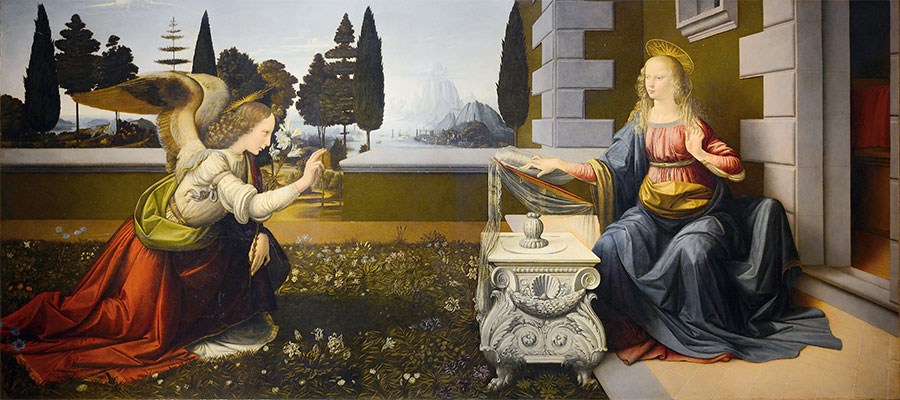
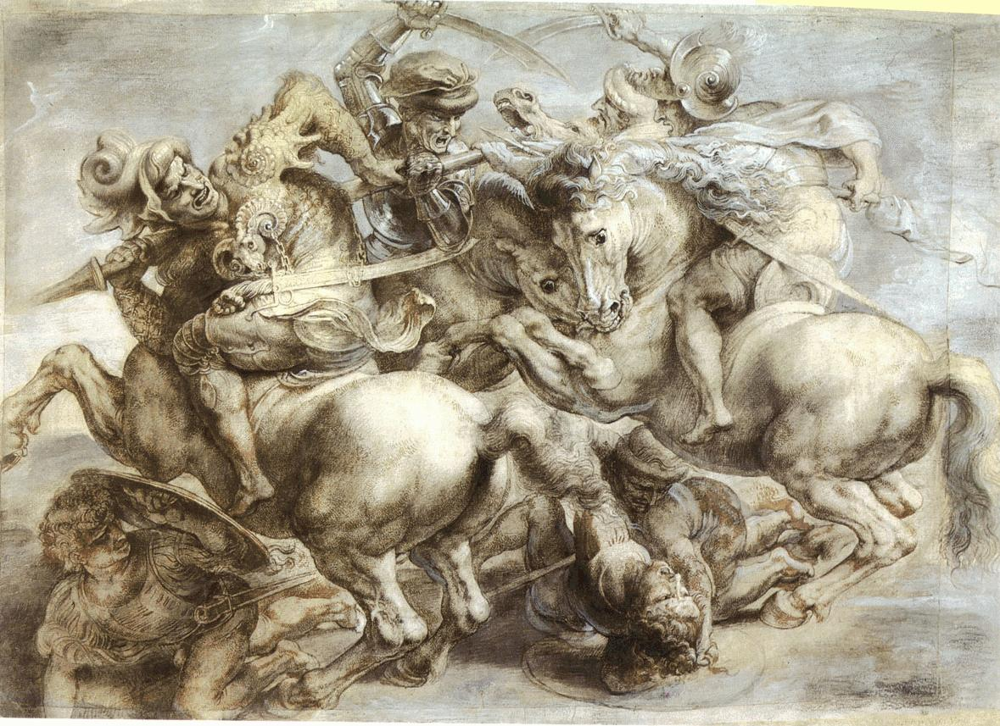

1 / 5

2 / 5

3 / 5

4 / 5
5 / 5
Leonardo da Vinci nació el 15 de abril de 1452. Fue hijo de un notario y una campesina que nunca se casaron. Hasta los cinco años vivió en casa de su madre, pero después empezó a vivir con su padre y su madrastra y de vez en cuando con sus abuelos. Llegó a tener doce hermanastros y hermanastras que fueron mucho más jóvenes que él.
En el año 1466 empezó a practicar diversas actividades en el taller de un escultor llamado Andrea del Verrocchio. Allí fue donde comenzó a pintar, a esculpir y a diseñar.
Leonardo da Vinci se convirtió en pintor, escultor, ingeniero, inventor, músico, escritor y arquitecto, y se le consideraba un gran genio. Siempre tuvo mucho interés en los estudios anatómicos del cuerpo humano y podía dibujar los órganos humanos con mucho detalle.
Fue aceptado en el gremio de pintores de Florencia en 1472 y abrió su propio taller de pintura y escultura, así que su fama comenzó a crecer y le encargaban muchos trabajos diferentes y muy importantes.
Durante toda su vida estuvo al servicio de varios duques que le encargaban esculturas y pinturas de sus familias para enseñarlas en sus salones y sus jardines, pero lo que de verdad le interesaba era inventar nuevos vehículos, armas y objetos.
Aunque siempre estuvo creando y construyendo nuevas obras, las luchas que hubo mientras vivía, tanto las luchas y rebeliones que hubo después de su muerte, fueron las culpables de que muchas de las cosas que creó fueran destruidas, quemadas o perdidas, incluyendo sus restos, que los tiraron en un lugar desconocido después de una guerra. Da Vinci murió el 2 de mayo de 1519 en Francia.
Todas las obras de Leonardo da Vinci son conocidas, pero las más famosas son: el cuadro de “La última cena”, que lo pintó en un mural del monasterio de Santa Maria delle Grazie en Milán; “La Gioconda”, que es más conocida como “La Monna Lisa”, y aún se debate si la mujer que está retratada en el cuadro existió de verdad o no; y “El hombre de Vitruvio”, que es un famoso dibujo que hizo sobre un hombre con 4 brazos y 4 piernas donde intentaba estudiar el cuerpo humano.
También hizo muchas esculturas, pero ninguna ha podido llegar a nuestros días.